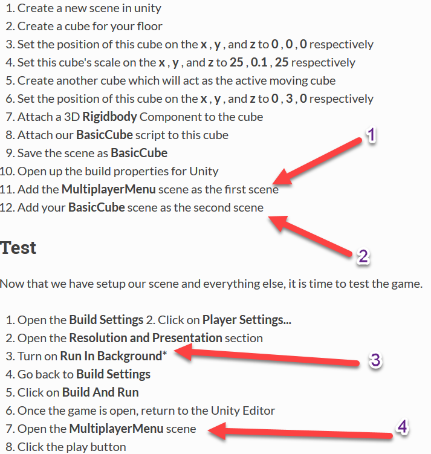

Basic Moving Cube Example
This example is not a continuation of other examples and should be treated as if it were done in a new project.
In this example, we are going to make a simple game where we have a cube in the scene that is owned by the server and all the clients can see it being moved by the server.
Planning Network Code
So, one of the first things we want to think about is our Network Contract. This is basically a fancy word for how we design/setup network communication. It is helpful to imagine our final result to our application so that we can properly design for it. In this application when a client connects it will see a cube, then the cube will move around in sync with the server, who is the person actually moving the cube. To accomplish this, we need to:
- Have a cube already in the scene
- Synchronize the position and rotation of the cube to all the clients from the server
- The transformations should be smooth so we need to interpolate them
Network Contract Wizard
Now that we know that we need to sync the position and rotation of a cube, we can design our network contract for that object. We will first open the Network Contract Wizard which is a UI provided by the Bearded Man Studios team to make it easy to design your network contracts in a easy way. To open this menu, go into Unity and select "Window->Forge Networking->Network Contract Wizard".

Once you have opened this editor you will be presented with a list of all the Network Objects currently available, to learn more about this please see the document on the Network Contract Wizard as we will just be going over how to create a network object through the contract wizard. To start, click on the "Create" button near the top and you will be presented with the create UI. In here, we have 3 major fields of interest, the Name fi elds, the Fields field, and the Remote Procedure Calls field.
- The Name field is where we create the name for our Network Object and behavior, this is a friendly name that should be written in "Pascal case" to follow the C# convention since it is going to be a part of the class names that are generated.
- The Fields section shows all of the various fields that our network should be aware of. In this case, we are going to want to make a positi on and rotation field which are Vector3 and Quaternion respectively. Note, you can name these fields whatever you like, these are just friendly variable names for you (and your team) to know what they are for when used
- The Remote Procedure Calls field is where you will design any Remote Procedure Call (RPC) function signatures. We are not going to go over this field in this tutorial as we do not need it for the goal we are attempting to accomplish.
Let's begin by naming our Network Object:
- Let's set the name for our Network object to BasicCube
- Click the Add Field button
- Name the new field position
- Set the type to Vector3
- Click the Interpolate button
- Set the interpolate time (the text field that pops up after clicking the Interpolate button) as 0.15
- Click the Add Field button
- Name the new field rotation
- Set the type to Quaternion
- Click the Interpolate button
- Set the interpolate time (the text field that pops up after clicking the Interpolate button) as 0.15
- Click the Save & Compile button

Extending Generated Classes
When we use the Network Contract Wizard (NCW) we are actually generating a lot of network code based on what has been input into the editor fields, this actually cuts out a lot of work that you would have to do by hand. There is one class in particular that we want to extend from, this class name will be BasicCubeBehavior. The naming convention for this generated class is _____Behavior where "_____" is the name we typed into the NCW. Let's now create a C# file in Unity and write our basic game logic, we will name this file BasicCube.
- Open the newly created C# file
- Add using BeardedManStudios.Forge.Networking.Generated; to the using statements
- Derive the class from BasicCubeBehavior
- Write the rest of the logic for the cube as seen below
BasicCube
using UnityEngine;
using BeardedManStudios.Forge.Networking.Generated;
public class BasicCube : BasicCubeBehavior
{
/// <summary>
/// The speed that the cube will move by when the user presses a
/// Horizontal or Vertical mapped key
/// </summary>
public float speed = 5.0f;
private void Update()
{
// If we are not the owner of this network object then we should
// move this cube to the position/rotation dictated by the owner
if (!networkObject.IsOwner)
{
transform.position = networkObject.position;
transform.rotation = networkObject.rotation;
return;
}
// Let the owner move the cube around with the arrow keys
transform.position += new Vector3(Input.GetAxis("Horizontal"), Input.GetAxis("Vertical"), 0.0f) * speed * Time.deltaTime;
// If we are the owner of the object we should send the new position
// and rotation across the network for receivers to move to in the above code
networkObject.position = transform.position;
networkObject.rotation = transform.rotation;
// Note: Forge Networking takes care of only sending the delta, so there
// is no need for you to do that manually
}
}
As you can see from the code snippet above, you can determine if the current player is the owner of the object using the networkObject.IsOwner boolean comparison. This will allow you to make code specifically based on the owner of the object. In this case, since the cube is going to be in the scene at start, it's owner is the server. In the snippet above the client (non owner) will update the transform position and rotation of the cube (the object this script is going to be attached to) to the position and rotation received from the server. Since we turned on interpolation, all of the smoothing is done "behind the scenes". Now the server in this case will just assign the position and rotation variables of the networkObject. These are the two fields we created in the NCW by the way. All generated network objects from the NCW will have a networkObject member variable that you can access from the deriving child. Whenever you assign a field of this object it is replicated across the network if the assigning user is the owner of the object.
Scene Setup
Now that we have done all the network programming required for our end goal, it is time to setup our scene.
- Create a new scene in unity
- Create a cube for your floor
- Set the position of this cube on the x , y , and z to 0 , 0 , 0 respectively
- Set this cube's scale on the x , y , and z to 25 , 0.1 , 25 respectively
- Create another cube which will act as the active moving cube
- Set the position of this cube on the x , y , and z to 0 , 3 , 0 respectively
- Attach a 3D Rigidbody Component to the cube
- Attach our BasicCube script to this cube
- Save the scene as BasicCube
- Open up the build properties for Unity
- Add the MultiplayerMenu scene as the first scene
- Add your BasicCube scene as the second scene
Test
Now that we have setup our scene and everything else, it is time to test the game.
-
Open the Build Settings 2. Click on Player Settings...
-
Open the Resolution and Presentation section
- Turn on Run In Background*
- Go back to Build Settings
- Click on Build And Run
- Once the game is open, return to the Unity Editor
- Open the MultiplayerMenu scene
- Click the play button
- Click the Host (127.0.0.1:15937) button on the bottom of the game view
- Go back to the built game
- Make sure the host ip address is set to 127.0.0.1
- Make sure the host port is set to 15937
- Click the Connect button
- Select the server game instance (Unity Editor)
Now if you move around the cube in the editor, you will see the movements replicated to the clients.
Troubleshooting
Getting a null reference exception? The most common user errors with this part of the documentation are: - Forgot to turn on Run in Background* - Tried pressing the play button in the scene and not loading the Multiplayer Menu scene first - Not setting up the multiplayer menu scene as index 0 and the demo scene as index 1 